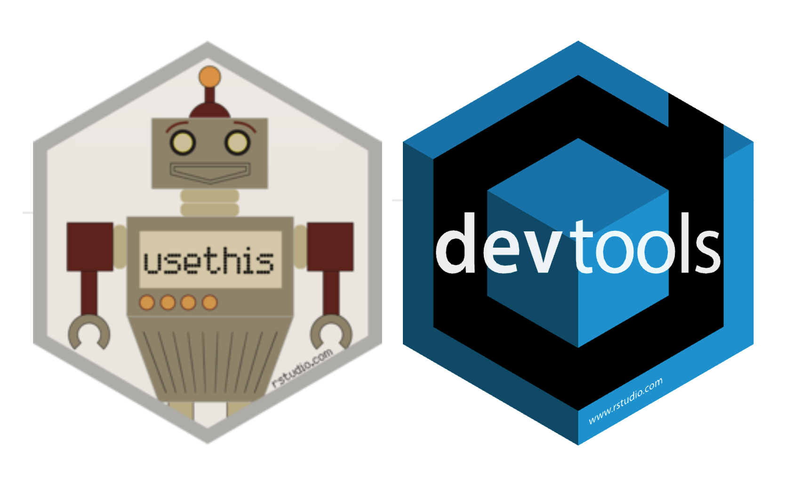

19 Packaging and documenting code
Learning Objectives
Explain the circumstances in which one should consider creating a package for their code
Use available package development tools (e.g.,
usethisanddevtoolsin R) to create a small, simple software packageBe able to distinguish between essential software package elements (required to make a minimal software package) and those that are not essential but act to improve the user and developer experiences.
Define what a namespace is.
Explain the role of the code within the following software package files:
- Python
pyproject.toml__init__.pydocs/*.github/workflows/ci-cd.yml
- R
DESCRIPTIONNAMESPACEman/*.Rd
Explain at a high level how the Cookiecutter project template tool works.
Compare and contrast how the Cookiecutter project template tool sets up a software package structure to how
devtoolsandusethisset up a software package.Generate well formatted function and package-level documentation for software packages using available tools (e.g.,
Roxygen2andpkgdownin R, or numpy-style dosctrings and Sphinx in Python)
19.1 When to start writing an R or Python package
When your DRY radar goes off:
It depends on your level of patience for violating the DRY principle, for me the magic number is about 3. If I repeat writing code within a single script or notebook, on the third try hair starts to stand up on the back of my neck and I am irritated sufficiently to either write a function or a loop. The same goes with copying files containing functions that I would like to re-use. The third time that I do this, I am convinced that I will likely want to use this code again on another project and thus I should package it to make my life easier.
When you think your code has general usefulness others could benefit from:
Another reason to package your code is that you think that it is a general enough solution that other people would find it useful. Doing this can be viewed as an act of altruism that also provides you professional gain by putting your data science skills on display (and padding your CV!).
When you want to share data:
The R package ecosystem has found great use in packaging data in addition to Software. Packaging data is beyond the scope of this course, but you should know that it is widely done in R and that you can do it if you want or need to.
I recommend watching a video from rstudio::conf 2020, called RMarkdown Driven Development by Emily Riederer, because I think it is such a nice narrative on how analysis code can evolve into software packages. Despite this talk being focused on R, it really applies to any data science language, and you could easily re-present this as “Jupyter Driven Development” or “Quarto Driven Development”.
19.2 Tour de packages
We will spend some time now exploring GitHub repositories of some Python and R packages to get more familiar with their internals. As we do this, fill out the missing data in the table below (which tries to match up the corresponding R and Python package key files and directories):
| Description | Python | R |
|---|---|---|
| Online package repository or index | ||
| Directory for user-facing package functions | ||
| Directory for tests for user-facing package functions | ||
| Directory for documentation | ||
| Package metadata | ||
| File(s) that define the Namespace | ||
| Tool(s) for easy package creation |
Note: at the end of lecture I will review the answers to this table.
19.3 Tour de R packages
Some R packages you may want to explore:
foofactors- the end product of the Whole Game Chapter from the R Packages book.convertempr- a simple example package I built as a demo for this coursebroom- a tidyverse R packagetidyhydat- a reviewed ROpenSci R package
19.3.1 usethis and the evolution of R packaging
What constitutes an R package or its configuration files, has not changed in a long time. However the tools commonly used to build them have. Currently, the most straight forward, and easy way to build R packages now involves the use of two developer packages called usethis and devtools.

These packages automate repetitive tasks that arise during project setup and development. It prevents you from having to do things like manually create boiler plate file and directory structures needed for building your R package structure, as well as simplifies the checking, installation and building of your package from source code.
Packages created via usethis and devtools can be shared so that they can be installed via source from GitHub, or as package binaries on CRAN. For a package to be shared on CRAN, there is a check and gatekeeping system (in contrast to PyPI). We will learn more about this in later parts of the course.
Fun fact! Jenny Bryan, a past UBC Statistics Professor UBC MDS founder, is the maintainer for the
usethisR package!
19.3.2 Learn more by building a toy R package
For individual assignment 5, you will build a toy R package using a tutorial Jenny Bryan put together: The Whole Game
After building the toy package, read Package structure and state to deepen your understanding of what packaging means in R and what packages actually are.
19.4 Tour de Python packages
Some Python packages you may want to explore:
pycounts_tb- the end product of How to Package a Python from the Python Packages bookconvertempPy- a simple example package I built as a demo for this coursePyWebCAT- a Pythonic way to interface with the NOAA National Ocean Service Web Camera Applications Testbed (WebCAT)laserembeddings- a Python package (uses the Poetry approach to creating Python packages)pandera- a reviewed PyOpenSci Python package (uses more traditional approach to creating Python packages)
19.4.1 Poetry and the evolution of Python packaging
If you want to package your Python code and distribute for ease of use by others on the Python Packaging Index (PyPI) you need to convert it to a standard format called Wheel.
Previously, to do this it was standard to have 4 configuration files in your package repository:
setup.pyrequirements.txtsetup.cfgMANIFEST.in
In 2016, a new PEP (518) was made. This PEP defined a new configuration format, pyproject.toml, so that now a single file can be used in place of those previous four. This file must have at least two sections, [build-system] and [tool].
This new single configuration file has inspired some new tools to be created in the package building and management ecosystem in Python. One of the most recent and simplest to use is Poetry (created in 2018). When used to build packages, Poetry roughly does two things:
Uses the
pyproject.tomlto manage and solve package configurations via the Poetry commandsinit,add,config, etcCreates a lock file (
poetry.lock) which automatically creates and activates a virtual environment (if none are activated) where the Poetry commands such asinstall,build,run, etc are executed.
Cookiecutter templates are also useful to help setup the biolerplate project and directory structure needed for packages. We will use these in this course as well.
19.4.2 Learn more by building a toy Python package
For an optional/bonus part of invidividual assignment 5, you can choose to build a toy Python package using a tutorial we have put together for you: How to package a Python
After building the toy package, read Package structure and state to deepen your understanding of what packaging means in Python and what packages actually are.
19.5 Key package things for Python and R packages
| Description | Python | R |
|---|---|---|
| Online package repository or index | PyPI | CRAN |
| Directory for user-facing package functions | Package directory (a named directory within the project root that contians .py files and a __init__.py file) |
R directory |
| Directory for tests for user-facing package functions | tests |
tests/testthat |
| Directory for documentation | docs |
man and vignettes |
| Package metadata | pyproject.toml |
DESCRIPTION |
| File(s) that define the Namespace | __init__.py |
NAMESPACE |
| Tool(s) for easy package creation | Cookiecutter & Poetry | usethis & devtools |
19.6 What is a minimal viable software package?
In this course, we are learning to build software packages in R and Python to a high standard, with regards to: - code robustness - documentation - collaboration strategies
This is really great, but that means there are a LOT of files to track and learn about. What can be helpful is to know and be able to identify which files are essential to make a locally installable software package.
19.6.1 Essential Python package files
Using the project layout we recommend for this course, here is a Python package structure with only the most essential files.
pkg
├── pyproject.toml
└── src
└── pkg
├── __init__.py
└── module.pyWhat do each of these do?
pyproject.tomlstores all the metadata and install instructions for the package.The presence of the
srcdirectory defines the code that will form the installable version of your package (meaning that users only get this code when they install the package, and that developers must install the package before running their tests).__init__.pytells Python that a directory is a package. They can be left empty, or they can also be used to add objects to the package’s namespace, provide documentation, and/or run other initialization code.module.py(this one can be named something else!) contains the functions you would like to share with your package users.
Getting to know a pyproject.toml file’s contents
Here is an example pyproject.toml file:
[tool.poetry] ┐
name = "pycounts_tt_2024" │
version = "0.1.0" │ Package metadata
description = "Calculate word counts in a text file!" │
authors = ["Tiffany Timbers"] │
license = "MIT" │
readme = "README.md" ┘
[tool.poetry.dependencies] ┐
python = ">=3.9" │ User function dependencies
matplotlib = ">=3.8.2" ┘
[tool.poetry.dev-dependencies] ┐
│
[tool.poetry.group.dev.dependencies] │
pytest = ">=7.4.4" │
pytest-cov = ">=4.1.0" │ Developer dependencies
jupyter = ">=1.0.0" │
myst-nb = {version = "^1.0.0", python = "^3.9"} │
sphinx-autoapi = "^3.0.0" │
sphinx-rtd-theme = "^2.0.0" ┘
[build-system] ┐
requires = ["poetry-core>=1.0.0"] │ Package build dependencies
build-backend = "poetry.core.masonry.api" ┘Almost everything inside this file is customizable based on your package. Even the build system! pyproject.toml can also be used with other build tools such as setuptools and flit! If you are interested in learning more, checkout the Python Packaging Tools guide from PyOpenSci.
Getting to know a __init__.py file’s contents
As mentioned earlier, this file can serve it’s essential package function of telling Python that this directory is a package by just existing and being empty. It can however serve other purposes. Let’s discuss the code that exists in the py-pkgs-cookiecutter template:
The py-pkgs-cookiecutter we used to create our pycounts package (Section 3.2.2) already populated our __init__.py file with this code for us:
# read version from installed package
from importlib.metadata import version
__version__ = version("pycounts")Because this code is in __init__.py is executed when the package is imported (this is the case for all __init__.py files, we can ask for the package version with Python code like this:
import pycounts
pycounts.__version__0.1.0In the code in __init__.py we get the version from the package metadata, that is derived from pyproject.toml. This allows us to only have to update the version of our package in one place when we bump to a new version.
What other kinds of interesting things can we do with __init__.py? Well we can use it to control the import behavior of a package. For example, there are currently only two main functions that users will commonly use from our pycounts package: pycounts.count_words() and plotting.plot_words(). Users have to type the full path to these functions to import them:
from pycounts.pycounts import count_words
from pycounts.plotting import plot_wordsIf we import those core functions in pycounts’s __init__.py file, which would bind them to the package namespace, we can make our user’s experience of loading them easier!
# read version from installed package
from importlib.metadata import version
__version__ = version(__name__)
# populate package namespace
from pycounts.pycounts import count_words
from pycounts.plotting import plot_wordsThe functions are now bound to the pycounts namespace, so users can access them like this:
import pycounts
pycounts.count_words<function count_words>
What is a namespace again? A “namespace” is a set of names that are used to identify and refer to objects of various kinds (source: Wikipedia).
19.6.2 docs/* and .github/workflows/ci-cd.yml
We will cover both these topics in greater detail later (docs/* in the documentation chapter/lecture and .github/workflows/ci-cd.yml in the continuous integration and deployment chapter/lecture), but for now it’s helpful to get a bit better of an idea of these files and what they are doing.
docs/*
To keep things organized, to and to make the package documentation easier to automate, we keep the documentation files in the docs directory and use a Makefile (or make.bat on Windows) therein to automate their rendering.
docs
├── changelog.md
├── conduct.md
├── conf.py
├── contributing.md
├── example.ipynb
├── index.md
├── make.bat
└── requirements.txt (deprecated)Note that many of these files also commonly exist in the root of projects and people expect to find them there!!! These include:
- changelog.md
- conduct.md
- contributing.md
So what we have done is pointed the doc/*.md’s of these files to the contents these files in the project root. And at rendering, their content will be used instead! If you look at the raw source of one of these files (e.g., conduct.md) you will see:

This helps keep our docs up to date by not having two places to update them!
conf.py is a configuration file that specifies style and formatting for the documentation. In this course we will not be modifying it, but if you wanted you can! To do this, please first read the docs for Sphinx configuration here.
The requirements.txt file in the pypkgs-cookiecutter template is now deprecated and will be removed in a future version. All dependencies are now managed by pyproject.toml.
.github/workflows/ci-cd.yml
This file contains automation code for continuous integration and delivery of our Python software package, reading the steps in this file you will see that it does the following:
- Continuous integration tasks:
- installs your package
- runs the test suite
- calculates test coverage
- Continous deployment tasks:
- bumps the package software version, as well as prepares and creates a GitHub release of the package
- builds the package
- publishes it to the package repository (i.e., TestPyPI or PyPI, or both)
When we first start building our packages, the GitHub Actions workflows for most of these things will fail. That is to be expected! As you complete the tasks for setting each of these up (e.g., writing tests and package code, setting up authentication to PyPI using GitHub secrets, etc) then the GitHub Actions workflows should start passing. This is a consequence of the philosophy of the pypkgs-cookiecutter template tool.
19.6.3 Essential R package files
Using the project layout we recommend for this course, here is a R package structure with only the most essential files.
pkg
├── DESCRIPTION
├── man
│ ├── functionA.Rd
│ └── functionB.Rd
├── NAMESPACE
└── R
└── functions.RWhat do each of these do?
DESCRIPTIONstores all the metadata and dependency installation instructions for the package.The
mandirectory contains the function documentation in.Rdfiles (one per function). The contents are from these are generated from theROxygen2function documentation in theR/*.Rfiles.Unsurprisingly, the
NAMESPACEfile is important in defining your package’s namespace.Ris the directory for the*.Rfiles which contain your exported (i.e., user-facing) functions.functions.R(this one can be named something else!) contains the functions you would like to share with your package users.
Getting to know a DESCRIPTION file’s contents
Here is an example DESCRIPTION file:
Package: foofactors ┐
Title: Make Factors Less Aggravating │
Version: 0.0.0.9000 │
Authors@R: │
person(given = "Tiffany", │ Package metadata
family = "Timbers", │
role = c("aut", "cre"), │
email = "tiffany.timbers@gmail.com", │
comment = c(ORCID = "0000-0002-2667-376X")) │
Description: Factors have driven people to extreme measures, like ordering │
custom conference ribbons and laptop stickers to express how HELLNO we │
feel about stringsAsFactors. And yet, sometimes you need them. Can they │
be made less maddening? Let's find out. │
License: MIT + file LICENSE │
Encoding: UTF-8 │
LazyData: true ┘
Roxygen: list(markdown = TRUE) ┐
RoxygenNote: 7.0.2 │ Developer dependencies
Suggests: │
testthat (>= 2.1.0), │
covr ┘
Imports: ┐ User function dependencies
forcats ┘
URL: https://github.com/ttimbers/foofactors ┐ More package metadata
BugReports: https://github.com/ttimbers/foofactors/issues ┘This is equivalent to the pyproject.toml file in Python packages. Again, almost everything in it is customizable based on your package’s specifics.
man/*Rd files
The man directory contains the function documentation in .Rd files (one per function). These can be created from the function’s roxygen2 documentation using devtools::document. They use a custom syntax that is loosely based on LaTeX, which can be rendered to different formats for sharing with the package users.
For example, this roxygen2 documention in R/fbind.R:
#' Bind two factors
#'
#' Create a new factor from two existing factors, where the new factor's levels
#' are the union of the levels of the input factors.
#'
#' @param a factor
#' @param b factor
#'
#' @return factor
#' @export
#' @examples
#' fbind(iris$Species[c(1, 51, 101)], PlantGrowth$group[c(1, 11, 21)])gives this syntax (loosely based on LaTeX) in man/bind.Rd:
% Generated by roxygen2: do not edit by hand
% Please edit documentation in R/fcount.R
\name{fcount}
\alias{fcount}
\title{Make a sorted frequency table for a factor}
\usage{
fcount(x)
}
\arguments{
\item{x}{factor}
}
\value{
A tibble
}
\description{
Make a sorted frequency table for a factor
}
\examples{
fcount(iris$Species)
}NAMESPACE file
In it are commands applied to R objects. Common commands include indicating that a function should be exported from your package, and/or that a another package should be imported to be used internally. The contents of this file are best to be created automatically using devtools to pull this information from the package function’s roxygen2 documentation (exports) and the DESCRIPTION file (imports).
Here’s an example NAMESPACE file:
# Generated by roxygen2: do not edit by hand
export(compare)
export(expect_equal)
import(rlang)
importFrom(brio,readLines)19.6.5 Exercise:
Let’s explore the pypkgs-cookiecutter to get to know how the Cookiecutter project template tool works in the case of pypkgs-cookiecutter, and in general!
- Go to: https://github.com/py-pkgs/py-pkgs-cookiecutter
- Looks at: https://github.com/py-pkgs/py-pkgs-cookiecutter/blob/main/cookiecutter.json
- Look for all the places you see
{ cookiecutter.__SOMETHING }
19.6.6 Differences in package building tool philosophy
iClicker question:
Setting the programming language differences aside (and the technical issues with the pypkgs-Cookiecutter at the beginning of last week), which approach to package building did you prefer?
A. Adding package components step-by-step as needed, like you did when using devtools/usethis to create an R package.
B. Setting up the project template in one fell swoop (i.e., once at the beginning of the project), like you did when using pypkgs-Cookiecutter to create an R package.
In class disucssion
- What are the advantages and disadvantages of the
devtools/usethissoftware package building approach in R?
- Advantages:
- Not overwhelming for beginners, since you just add one thing at a time.
- Allows you to redo the one thing you made a mistake on.
- Disadvantages:
- Easy to forget to add or do somethings, as you need to run a different command each time.
- Somewhat inefficient as a command needs to be run each time you want to add a new feature to the package.
- What are the advantages and disadvantages of the
pypkgs-Cookiecuttersoftware package building approach in Python?
- Advantages:
- Minimizes forgetting to dd or do somethings, because you just have one setup step at the beginning.
- Efficient because you just have one setup step at the beginning.
- Disadvantages:
- Can be overwhelming for beginners, since you generate a large number of files at one time.
- Takes a lot of time to when you make a mistake (e.g., typo in package name) because you need to manually got back and fix things.
- Sets everything up at the beginning, including the things you are not yet ready for (e.g., Continuous integration and deployment workflows on GitHub actions) and there are some annoying consequences of this (e.g., notifications about failed checks).
19.7 Dealing with other package dependencies in your package
19.7.1 Dealing with package dependencies in R
When we write code in our package that uses functions from other packages we need to import those functions from the namespace of their packages.
In R, we do this via
use_package, which adds that package to the “Imports” section of DESCRIPTIONWe also need to refer to that package in our function code, there are two ways to do this:
- refer the function by
package::fun_name(e.g.,dplyer::filter) whenever you use the function in your code - add the function to your packages namespace so that you can just refer to it as your normally would. To do this add
@importFrom <package_name> <function_or_operator>to the Roxygen documentation of the function that you would like to use the function from the other package in and then usedocument()to update the DESCRIPTION and NAMESPACE file.
- refer the function by
It is recommended to use method 1 (pkg::fun_name) because it is more explicit on what external functions your package code depends on (making it easier to read for collaborators, including future you). The trade off is that it’s a little more work to write.
19.7.2 The pipe, %>%, a special dependency
Given the ubiquity of the pipe operator,
%>%, in R, there is a function that automates exposing to your entire package:usethis::use_pipe()Note, in general, the tidyverse team does not recommend using the pipe in packages unless they are personal, low use packages, or “pro” packages with a lot of data wrangling because:
- In most cases it is really an unnecessary dependency
- It is not that readable for folks who do not typically use the pipe
- makes debugging more challenging
So, should you use the pipe in your package? The answer is, it depends on your package’s scope, aims and goals. Also, this is probably your first package, so it doesn’t have to be perfect. If using the pipe helps you get the job done this time around, go for it. Just know that if you aim to ever build a widely used package, you probably do not want to depend on it.
Note: with the advent of the base R pipe
|>, you can now use that pipe and no longer have to add it as a dependency!
19.8 Package documentation for R
There are several levels of documentation possible for R packages: - code-level documentation (Roxygen-style comments) - vignettes - package websites (via pkgdown)
19.8.1 Code-level documentation (Roxygen-style comments)
- We learned the basics of how to write Roxygen-style comments in DSCI 511
- In the package context, there are Namespace tags you should know about:
@export- this should be added to all package functions you want your user to know about@NoRd- this should be added to helper/internal helper functions that you don’t want your user to know about
19.8.2 Vignettes
It is common for packages to have vignettes (think demos with narratives) showing how to use the package in a more real-world scenario than the documentation examples show. Think of your vignette as a demonstration of how someone would use your function to solve a problem.
It should demonstrate how the individual functions in your package work, as well as how they can be integrated together.
To create a template for your vignette, run:
usethis::use_vignette("package_name-vignette")Add content to that file and knit it when done.
As an example, here’s the dplyr vignette: https://cran.r-project.org/web/packages/dplyr/vignettes/dplyr.html
19.8.3 Package websites (via pkgdown)
Vignettes are very helpful, however they are not that discoverable by others, websites are a much easier way to share your package with others.
The
pkgdownR package let’s you build a beautiful website for your R package in 4 steps!Turn on GitHub pages in your package repository, setting
main branch / docs folderas the source.Install
pkgdown: `install.packages(“pkgdown”)Run
pkgdown::build_site()from the root of your project, and commit and push the changes made by this.Push your code, including the
docsdirectory to GitHub.com
In addition to the beautiful website, pkgdown automatically links to your vignette under the articles section of the website!!! üéâüéâüéâ
Note you can also configure a GitHub Actions workflow to automate the rebuilding of the
pkgdownsite anytime changes are pushed to your package’s GitHub repository. We will discuss this later in the course under the topic of continuous deployment.